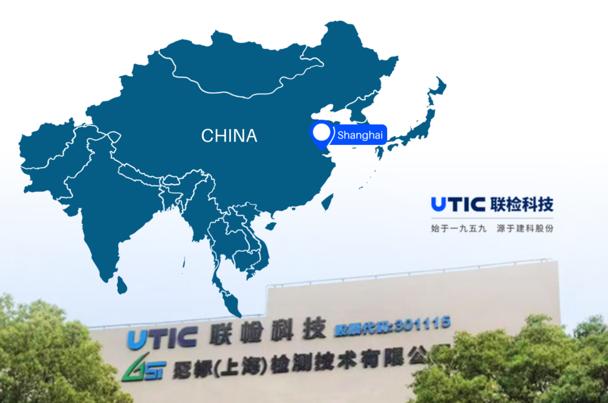
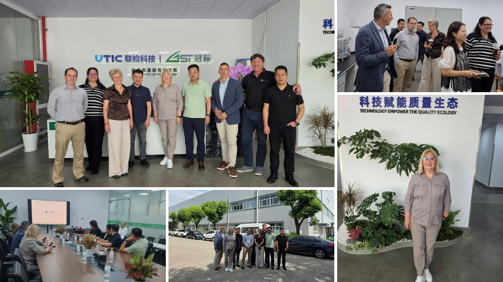
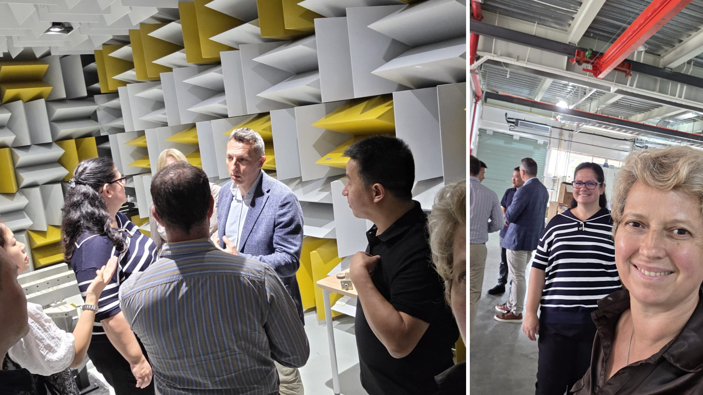
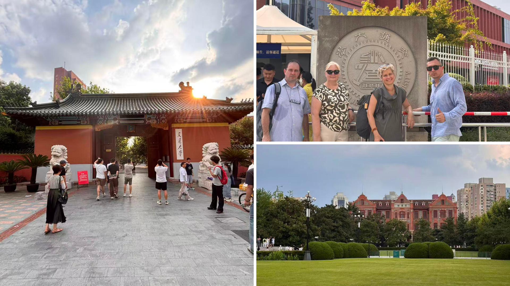
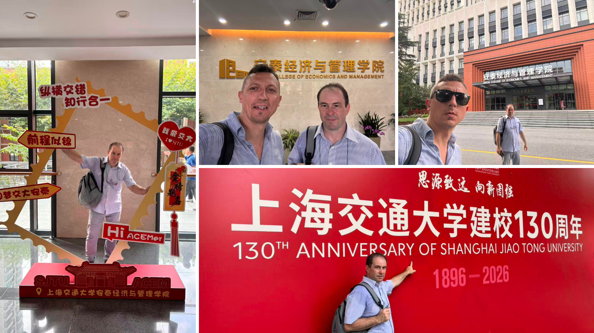

5 August 2026
From New Connections to Future Collaboration
The final stage of the study visit focused on strengthening the professional relationships established during the previous days and exploring concrete opportunities for future collaboration. Building on the contacts made during the World Artificial Intelligence Conference (WAIC), the project team visited key organisations in Shanghai to discuss future cooperation in research, innovation and medical technologies within the framework of the Erasmus+ MedIT-HuB project.

Day 4 – Visit to UTIC (United Testing Inspection and Certification Technology Co.)
One of the key activities of the final stage of the mission was the visit to UTIC (United Testing Inspection and Certification Technology Co.), a company operating in the field of testing, inspection and certification (TIC). Following the contacts established during WAIC, the on-site visit provided an opportunity to gain a better understanding of the company’s activities and to discuss potential areas for future collaboration.
Located in Anting Town, Shanghai’s Jiading District, UTIC’s newly established industrial testing and research headquarters serves industries including advanced manufacturing, new energy vehicles and medical devices. During the visit, the project team toured the company’s laboratories and R&D facilities and engaged in technical exchanges with UTIC’s engineering and innovation teams.

Discussions focused on the integration of AI-driven quality control and predictive maintenance systems into industrial testing workflows, as well as the application of advanced sensing technologies, big data analytics and machine learning to improve testing and certification processes. The visit highlighted the potential application of AI and data science in industrial testing and quality assurance—areas directly relevant to medical device validation, regulatory compliance and smart health technologies within the MedIT-HuB project.

The visit also provided an opportunity to discuss potential collaboration within the MedIT-HuB project. UTIC, which already collaborates with several European high-tech organisations in the field of testing, expressed its interest in contributing experts to the project’s international expert pool and participating in testing and validating the learning materials developed within the project framework.
Visit to Shanghai Jiao Tong University
The study visit also included a meeting at Shanghai Jiao Tong University (SJTU), a university with strong capabilities in medical technology and artificial intelligence.

The discussions focused on opportunities for future research collaboration in medical AI, precision diagnostics and translational medicine. The visit also provided insight into the university’s laboratory facilities, research capacities and international cooperation network, laying the groundwork for potential future scholar exchanges, knowledge sharing and joint training activities within the MedIT-HuB project.

Concluding Remarks
The study visit delivered the expected outcomes within the framework of the Erasmus+ MedIT-HuB project by combining academic exchange, technology benchmarking and international partnership building.
Visits to leading universities, participation in the World Artificial Intelligence Conference and meetings with industrial and research partners provided valuable insights into current developments in artificial intelligence, medical technologies and digital innovation. At the same time, the mission helped establish and strengthen relationships with universities, research institutions and industry representatives, identifying opportunities for future cooperation, expert involvement and the validation of the project’s educational materials.
The partnerships established during the mission provide a solid foundation for future joint activities and support the long-term objectives of the Erasmus+ MedIT-HuB project. With the completion of this final visit, the study mission to China concluded a programme that combined academic exchange, technological benchmarking and the development of new international partnerships.
The views and opinions expressed are those of the author(s) and do not necessarily reflect those of the European Union or the Tempus Public Foundation. Neither the European Union nor the granting authority can be held responsible for them.